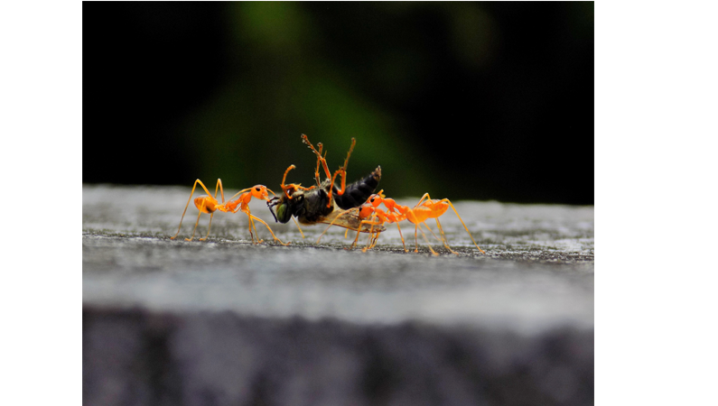

Social Insects and pandemics
August 7, 2020 10:30pm ISTPandemic, a word which we all are familiar with now. Pandemics have happened as early as 3000 BC (of which we have a record of). Humans know how to prevent and treat diseases. We have a vast knowledge of many diseases, and we are continually trying to learn more. But what about insects? How do they prevent such diseases, especially those who live in colonies like ants and bees? Just think about a disease which spreads fast and can lead to the death of infected individuals (thinking of COVID-19 lol). What would happen to colonies of social insects if such disease spread? Some colonies can be much more populous than the most populous city in the world, Tokyo. Then how do these little insects survive such pandemics?

Well, one will be amazed to know that these social insects have a collection of social behaviours to fight diseases, which is referred to as social immunity. It is becoming a topic of research as it could help humans learn to fight pandemics better and create a more pandemic-resilient society. Let's take a look into some examples of such behaviours.
A species of ants (A. custodiens) implement a form of quarantine where ants that were exposed to infection aren't allowed to enter, or one can say the infected ones don't enter the chambers of the queen and the young ones. They also usually remain confined to the chambers near the exit. They also implement more frequent and intense allogrooming where nestmates clean and disinfect the potentially exposed individuals.
Another example is of sugar ants (C. fulvopilosus) who use formic acid as a potent antimicrobial substance. Some ants harvest antimicrobial tree resins and spread them around their nests which is called collective medication. Social insects are also well known for keeping their colonies clean. Workers collect the waste and dead bodies outside the nest.
Seeing ant's communication from one colony to another is very rare. This also prevents epidemics from becoming pandemics. In our case, we are connected to every part of the world, making it easier for diseases to travel from country to country.
So, we can see that social insects have their own measures to prevent pandemics which are somewhat similar to us and also slightly different.
Author :
ASHWIN SHARMA
Related Articles
Communication in Insects
August 29, 2020 3:30pm IST
For humans, it is easier to communicate with each other. We have different languages which we speak and sometimes translate so that people from other countries can also understand.
How Ants Moves In Ques ?
November 12, 2020 4:47pm IST
We have all seen the ants walking along a line towards a food source. But have you thought about how they could be so precise in their movement? Are there any traffic ants or road maker ants that make sure that ants walk in a designated path? They sure don’t have GPS to navigate their way around.

The Termite Mound
August 9, 2020 11:50pm IST
Can you imagine that a termite, which is barely the size of a fingernail, when coming together in a million or two, can build mounds that can reach a height of 17 feet or even more!? Termites live in big social colonies which include kings, queens, workers, and soldiers.

Wiggle-waggle for survival
August 27, 2020 10:00am IST
While peacocks are known for their bonnie dance, these peacock spiders are known for hokey pokey dance showing off their stylish fans. Both perform to please the females,